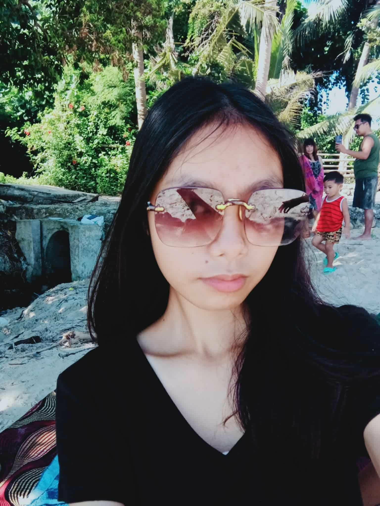

Key skills
- User research and interviews
- Behavior insight synthesis
- Product usability feedback
I supports product decisions with user research, clear findings, and empathy-based recommendations.
I am an Information Technology student who is passionate about technology and eager to improve my skills in programming, web development, and computer systems. I am hardworking, adaptable, and willing to learn new tools and technologies. I can work well both independently and as part of a team. I am looking for opportunities where I can apply my knowledge, gain experience, and contribute to meaningful projects.
